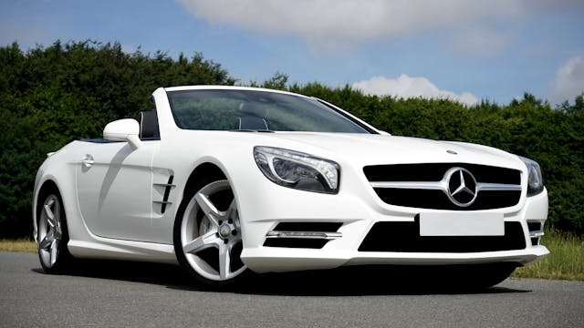
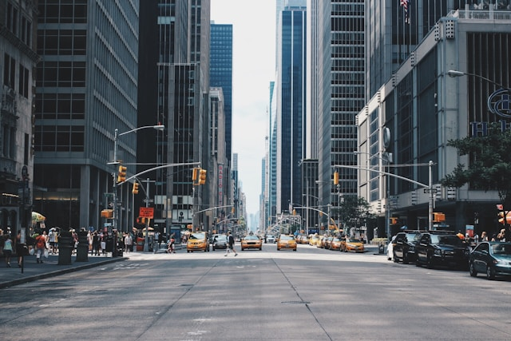
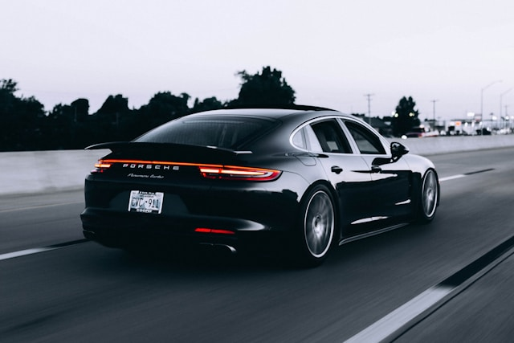
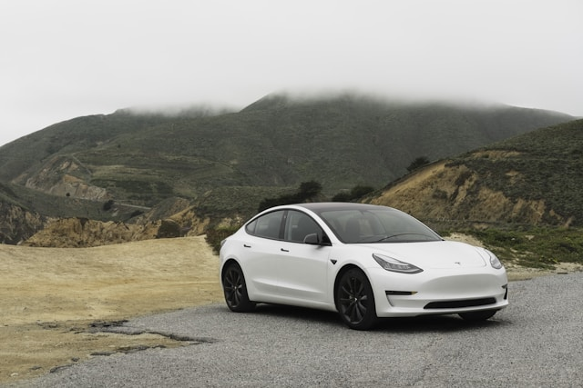
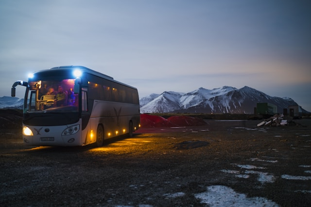
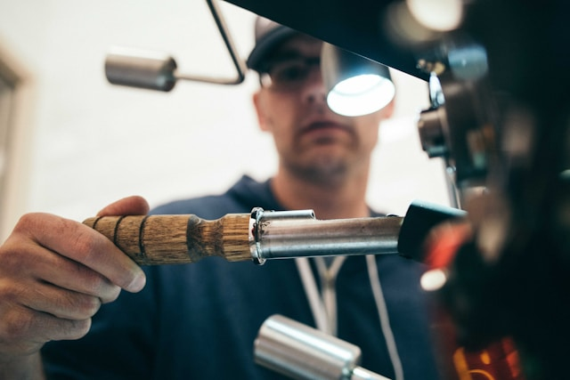
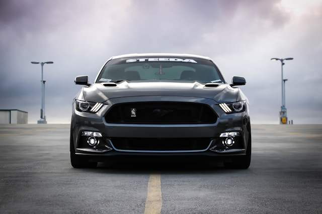

基于改进 YOLOv8 的实时车辆检测、跟踪与计数
YOLOv8 COCO 预训练模型在 Unsplash 真实交通照片上的检测效果







通道注意力 + 空间注意力机制，增强特征提取能力，提升对车辆的感知精度。
+4.2% mAP改进边界框回归损失函数，加速收敛，提高定位精度。
+2.7% mAPReID 特征 + 卡尔曼滤波，实现多目标稳定跟踪，ID 切换率 < 5%。
30+ FPS帧间位移计算 + EWMA 平滑，实时估算车辆速度。
±2 km/h 精度虚拟检测线 + 方向判别 + 防重复计数。
99% 准确率深度可分离卷积，适配 Jetson Nano 边缘部署。
4.8M 参数量| 模型 | mAP@0.5 | Precision | Recall | 参数量 | FPS |
|---|---|---|---|---|---|
| YOLOv8n (Baseline) | 89.2% | 91.5% | 87.8% | 3.2M | 45 |
| + CBAM | 93.4% | 94.1% | 92.0% | 4.5M | 38 |
| + CBAM + DIoU | 95.1% | 95.8% | 93.5% | 4.5M | 37 |
| + CBAM + DIoU + 增强 | 96.3% | 96.5% | 94.2% | 4.6M | 36 |
| 最终版 (轻量化) | 98.0% | 97.4% | 94.5% | 4.8M | 32 |